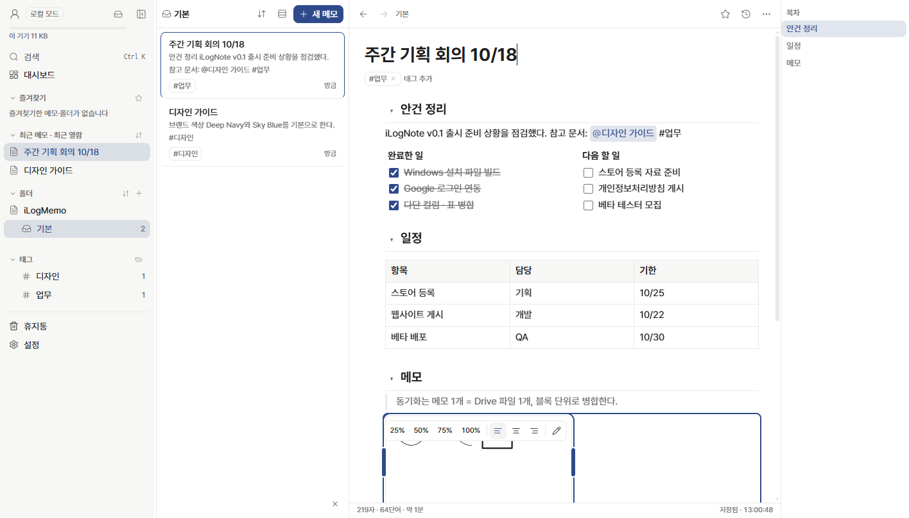
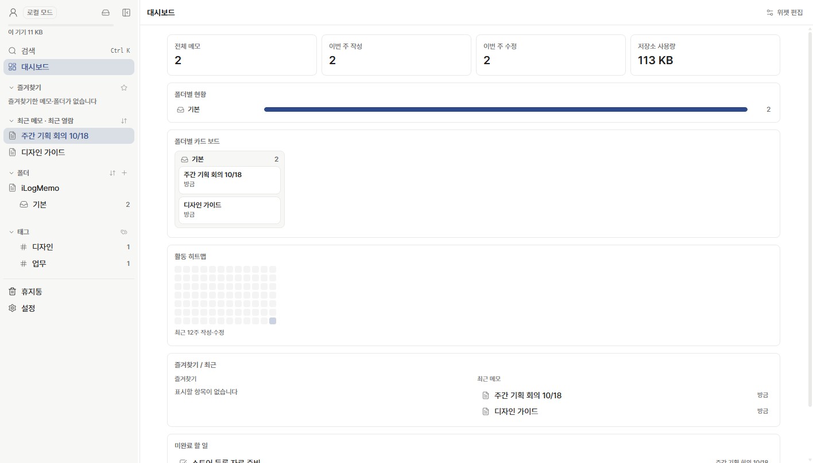
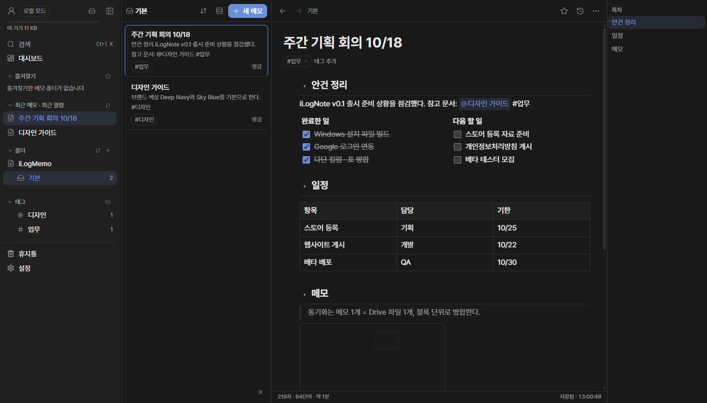
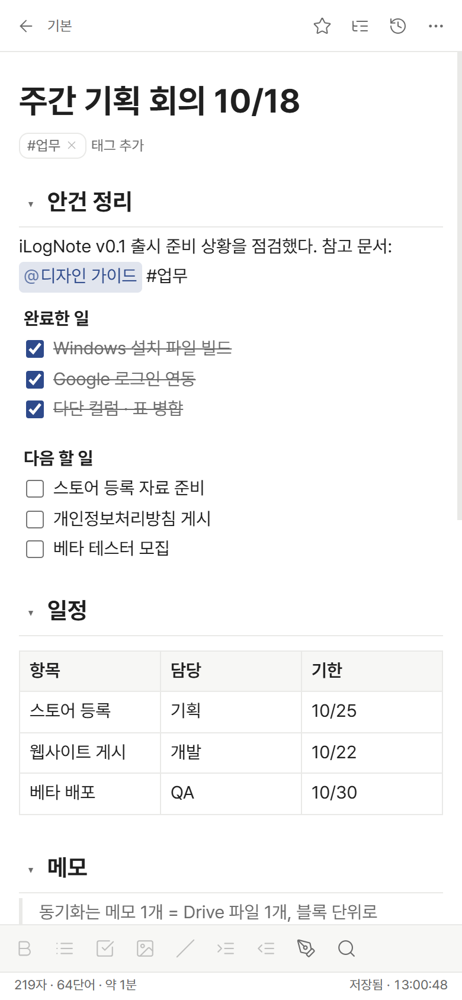

주요 기능
블록 에디터
/ 명령, 구역(목차), 표 · 셀 병합, 다단 컬럼, 코드, 체크리스트, 이미지, 펜 드로잉.
@ 메모 링크 · 백링크
메모끼리 연결하고, 어디서 왔는지 · 누가 참조하는지 한눈에.
로컬 우선
인터넷 없이도 모든 기능이 동작하고, 연결되면 자동으로 동기화합니다.
본인 Google Drive 동기화
메모 · 설정은 내 Drive의 iLogNote 폴더에만 저장됩니다. 여러 기기에서 이어서 작성하세요.
버전 히스토리
바뀐 부분만 기록해 용량은 작게, 언제든 이전 버전으로 복원.
표준 포맷으로 탈출
Markdown · HTML · JSON 백업으로 언제든 전부 내보낼 수 있습니다.
화면




다운로드
Windows
Windows 10 · 11 (64비트) · v0.1.0 · 90MB
설치 파일 받기 (.exe)SHA-256 be7fd2d96b0abd7d3135a1ab2fe4da34c9858dc0219c07eadcabe8ee4428a7ed
Android
Google Play
출시 예정iPhone · iPad
App Store
출시 예정Windows 설치 시 "Windows의 PC 보호" 창이 뜨면 추가 정보 › 실행을 누르세요(코드 서명 인증서 적용 전 안내).
Google 데이터 사용 요약
English
iLogNote is a block-based personal note app developed by ZenithOne. Notes are stored only on your device and, if you sign in, in an iLogNote folder in your own Google Drive. There is no operator server: we never collect, store or see your notes. When you sign in with Google, the app requests your basic profile (name, email, photo) and the drive.file scope, which only gives access to files the app itself creates. See our Privacy Policy and Terms of Service.